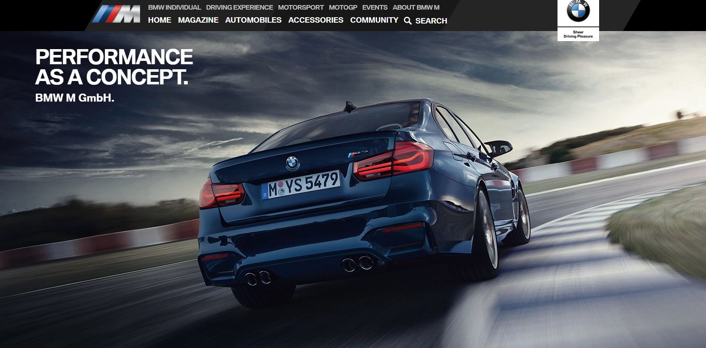
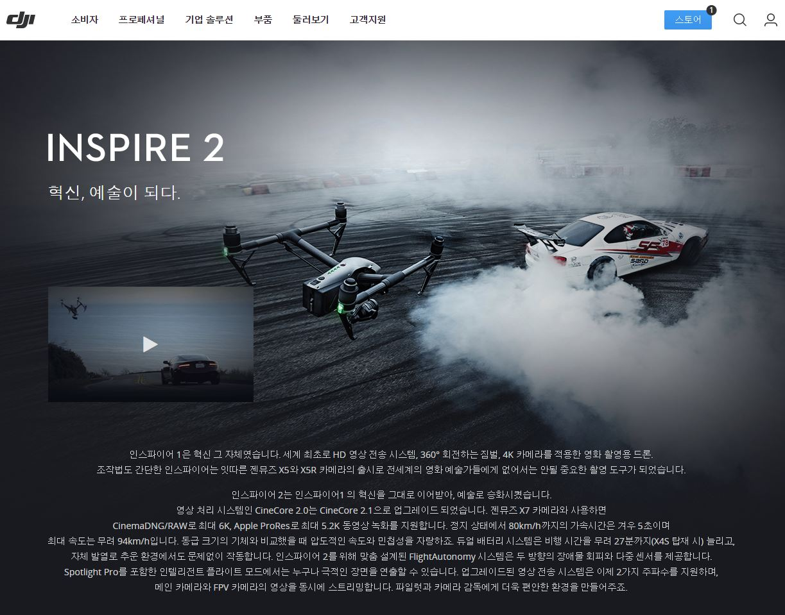

01_BMW M
BMW M에 대한 모든 정보를 원 스크롤를 통해 볼 수 있으며, M에 대한 역사가 상세히 한 페이지 내에 적혀있다.
02_Apple HomePod
애플 신제품 HomePod에 대한 제품설명 사이트이며, 원스크롤을 통해 제품의 디자인을 입체적으로 볼 수 있을 뿐만 아니라,
HomePod에 대한 기능도 입체적인 반응을 통해 알 수 있습니다.
03_DJI OSMO MOBILE2
DJI 핸드짐벌 제품의 성능과 기능이 적혀있으며, 각 기능별로 예시 영상이 있어서 어떻게 사용되는 기능인지 바로 확인할 수 있다.
04_DJI INSPIRE2
다른 클릭 없이 스크롤과 마우스를 갖다대면 정보가 뜨는 유형이며,
기능 각각에 대해서 디테일하게 설명되어있습니다.
Hknu_class_dPub*_Cho Jae Yun